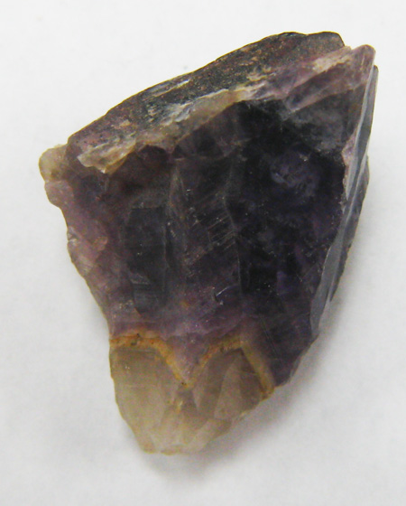

I am compiling a list links to free programs and resources that may be useful to various museums and institutions. Links are organized into the main topics that they address, which are listed to the left.
Please click the name of the resource to be taken to its website (opens in a new window).
| Archiving Specimen Photographs |
| |
| Geosetter |
| A free program through which all three types of metadata in digital photographs (EXIF, IPTC, and XMP) can be added and edited. I find this program pretty useful, as it includes such features as choosing locality from Google Maps or by entering GPS coordinates, template creation and use, and batch editing of image files. The unfortunate downside to this program is that it only works on Windows systems XP or higher. The free version has an hourly limit to web access through the program in order to download city and state names from entered GPS coordinates, but this can be resolved by trying again later. |
Download an example photograph with metadata added through Geosetter here:
 |
| |
| Guidelines for Handling Image Metadata (PDF) |
| Metadataworkinggroup.org created a great beginner's guide to use of the three types of metadata used in digital photographs. Please click here to open the pdf. |
| |
Online Presentation |
| |
| Omeka.org |
| Omeka.org is a platform that can present objects, collections, exhibits, and information to the world. Data is housed on the institution's server, and the Omeka platform is downloaded onto a local machine for use. The presentation is customizable through plugins and themes, and the program and service are free. |
To try .org without downloading, please click here. |
| |
| Omeka.net |
| Omeka.net is a web based version of Omeka.org which requires no institutional server, as everything is hosted on the website in a cloud fashion. The Basic plan is free and provides up to 500 MB of storage. A few plugins and themes are also available. Larger storage plans are available at yearly rates. |
Please click here to see a very simple demo of a geology collection and exhibit presented on Omeka.net. |
| |
Free Database Programs |
|
| Please note that you can find tables of information regarding these database programs here. |
| |
| Free Databases That Require an Institutional Server |
| |
| Collective Access |
| Collective Access is a free, server-based database program that also has an online counterpart called Pawtuckit. For a summary of this program, please click here. |
You can download a demo of this program here under the heading Quickstart. |
| |
| MySQL |
| MySQL is more of a database backend than frontend, but is free for download and use. For a summary of this program, please click here. |
MySQL database and related tools can be downloaded here. |
| |
| Free Databases That Do Not Require an Institutional Server |
| |
| Museum Archive software project |
| I'm not sure if or how many institutions use this software to manage their collections, but I have found that it serves as a free, simple database that can be downloaded onto a lab or home computer to introduce student workers to the general use of relation databases. Unfortunately, it can only be used on Windows, but using this as an introductory training tool is safer for the informational integrity of the collection than starting a student from scratch on the insitutional database. The Premium version of this software includes some additional features as barcodes and unlimited image storing, but the Basic version is adequate for training. |
|
| The free download for this program can be found here. | |
|